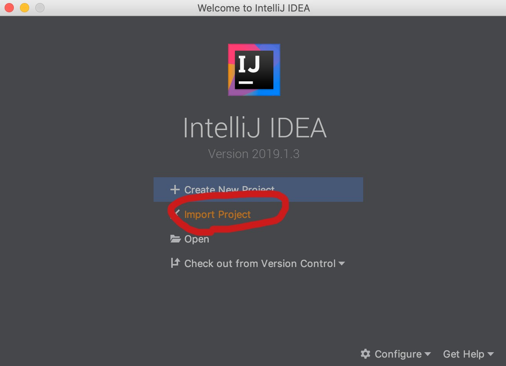
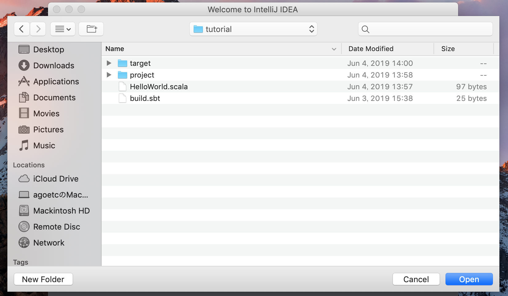
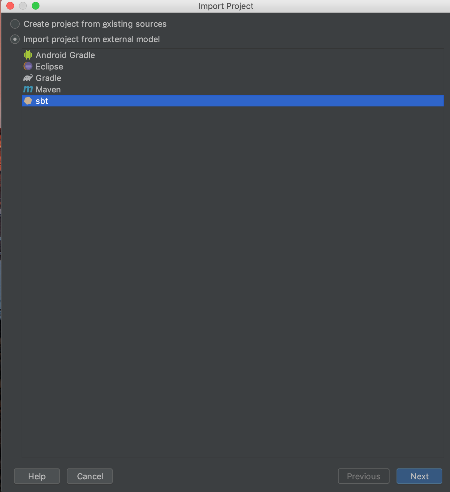
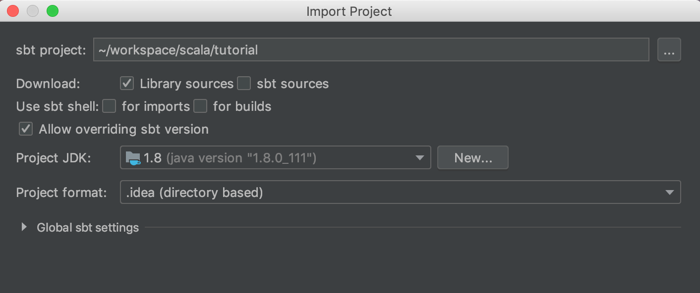
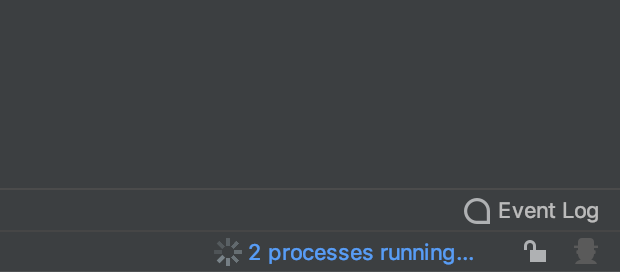
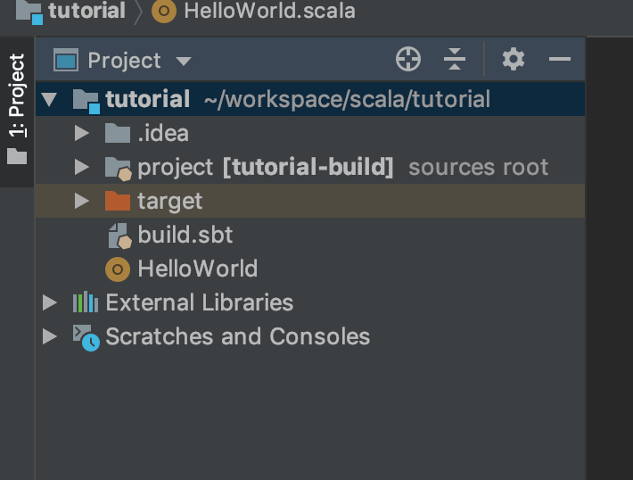
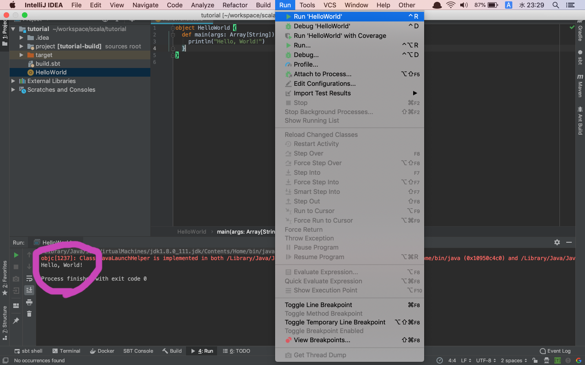

プロジェクトの読み込み¶
作成したプロジェクトをIntellij IDEAで読み込みます。
IntelliJ IDEAを開き、importをクリックしてください。

クリックすると、フォルダを選択させられるので、
前ページで作成したtutorialフォルダを選択し、openをクリックしましょう。

openをクリックすると以下のようなものが表示されるので、
import project from external modelにチェックをし、
sbtを選択して、Nextをクリックしてください。

以下のような画面が表示されます。
チェックボックス等色々ありますが、なにもいじらずそのままFinishを押しましょう。
Project JDKの項目が選択されていない場合、
Javaのインストールに失敗しているので、インストールのJavaの項目をやり直すか、
調べて各自解決方法を模索してみてください。

Finishを押すと、Projectが開かれます。
そのとき、右下にScalaプロジェクトを読み込こんでいる表示がされますので、
表示がなくなるまで待機しましょう。
(processes running...という文字、またはプログレスバー)

表示がなくなれば、読み込んだプロジェクトを確認しましょう。
左上にあるProjectというタブをクリックすると、読み込んだプロジェクトが表示されます。
このとき、.ideaというフォルダが作成されていることが確認できます。
これはIntelliJ IDEAがフォルダを開いたときに作成されるものです。
気にしないでください。

前回作成したHelloWorld.scalaをIntelliJ IDEAで実行してみましょう。
メニューバーのRun内にある、Run Hello Worldをクリックすると実行されます。
結果は下部に表示されます。

このページでの最終的なフォルダ構成は以下になっています
tutorial/ ┣ .idea/ ┣ project/ ┣ target/ ┣ HelloWorld.scala ┗ build.sbt